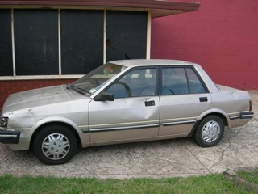

27 Jan 2010
(pronounced: "Twenty-Ten" the future!)
I am getting better at coding!
2010 is YWAM's 50th anniversary. Last week in Canberra there was a celebration for eastern Australia. Our whole base (104 people) packed up and went down for the week, where we heard from YWAM founders, Loren and Darlene Cunningham (thanks to Shawn who lead a team that went early, set up and ran all the sound). It was such a fantastic week of meeting new people currently in, formerly, or blessed by YWAM and hearing from our founders on our history and where the mission is headed. God spoke to us and encouraged us in our life together especially for next year. We (YWAM Newcastle) ran a cafe during the celebration and were able to raise money for the building of our new cafe in the Youth Street warehouse. Thanks to those of you who donated towards our travel and accommodation expenses! It was such a blessing for us to be able to go.
In February, the busyness that we've been experiencing will be at a whole new level. The YWAM Australia and Papua New Guinea Ship Tour launches on February 23 with a week of teams (including bands, dance groups, and speakers) going into local high schools as well as classes coming to take tours on the medical ship and be presented with ways that they can be involved in missions. The week will finish off with an all day Youth Street festival that will include art exhibits, skate demos, sport competitions, dance performances and live bands and a presentation on the purpose and mission of the ship and YWAM Australia's efforts to see young people take action in missions. This is a huge prayer point for me (Sarah) as I am in charge of seeing all of this come together along with receiving all the necessary permissions from the local council for it to actually happen. My (Shawn's) band, Like Moths, will be performing and helping with the ship tour in Newcastle and all the way along the North Tour up to Townsville. Pray we continue to write new songs enabling youth to connect with God!
We need more support! And every little bit helps. This month, our car (Victor) needed inspection for new registration but didn't even come close to passing and would cost more than it is actually worth ($30) for us to get it fixed. SO, tomorrow morning the wrecker's are coming to pick up our beloved piece of scrap metal and we will be car-less. I guess its good, because now we can get our $500 insurance deposit back. Also keep us in your prayers as we look for a more permanent place to live here in Newie. The market is chock full of really gross little places that are too far away from base and not so full of nice places nearby. We have around $1500 (and growing) in debt to the base in staff fees and $4k (very slowly decreasing) in evil credit card debt. God continues to teach us, speak to us and develop our communication and relationships with you through this pressure! Thank you, Lord, for working all things together for the good of those that love you.